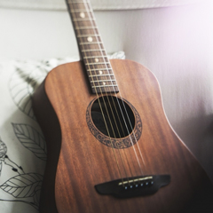
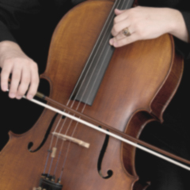

Guitares
>> Modèle 1
>> Modèle 2
Je vous propose plusieurs modèles de guitares et de violoncelles dont vous trouverez les caractéristiques en cliquant sur les liens ci-contre.
Je suis aussi en mesure de réaliser des commandes sur mesure. Je vous invite à me contacter directement ici pour en savoir plus.
Violoncelles
>> Modèle 1
>> Modèle 2